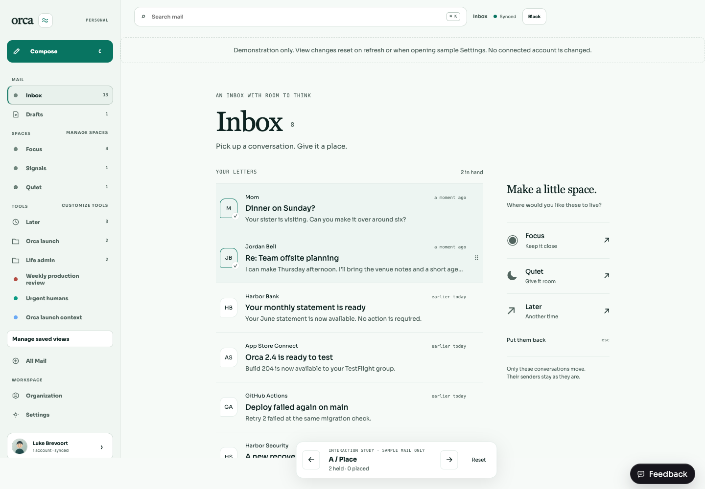
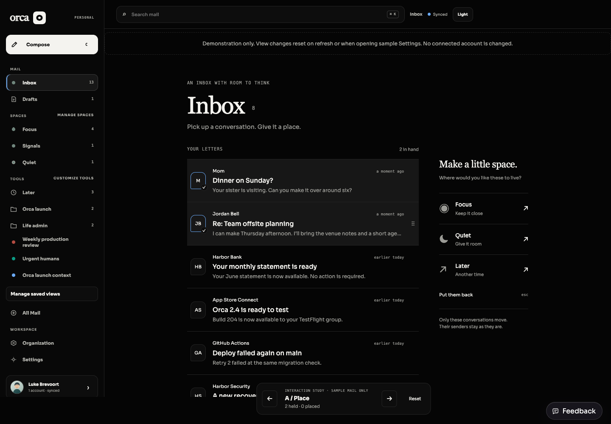
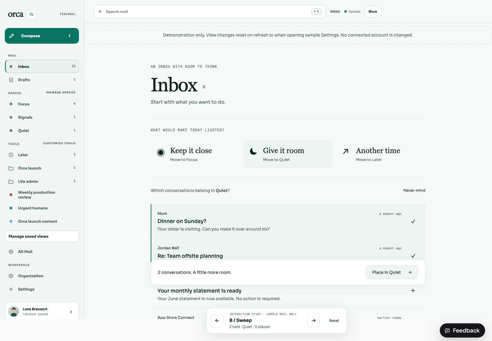
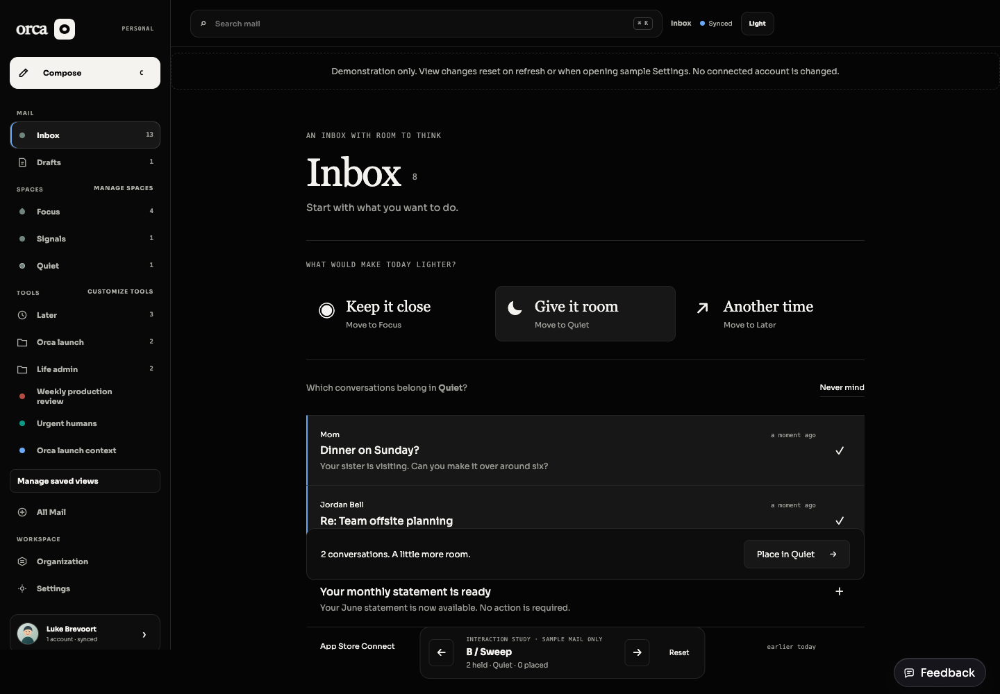
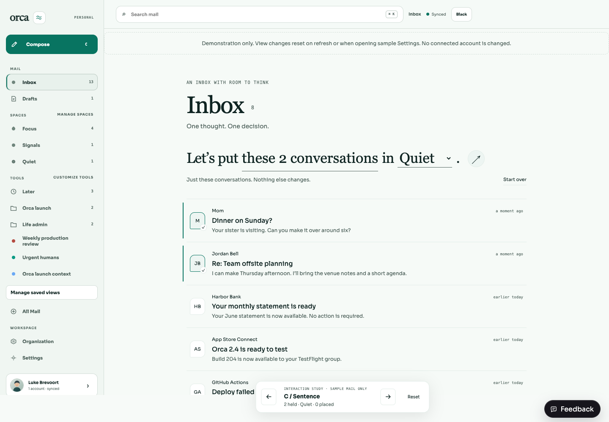
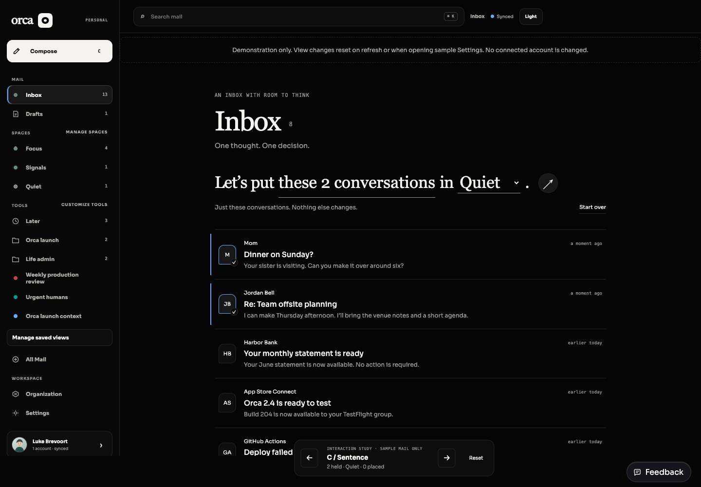

ORCA / INTERACTION STUDY / THROWAWAY PROTOTYPESMail you can move.
Less UI to manage.
The previous revision kept the same mode-and-toolbar idea. These three concepts change the order of decisions, the physical interaction, and where actions live.
Try all three in the live inbox →Use the bottom arrows or your keyboard’s left/right arrows to switch concepts. State resets between concepts. All actions affect in-memory sample mail only.
CONCEPT APlace
My recommendation. Conversations behave like letters: gather them by their initials, then give them a place.
Drag one row onto a destination. Or tap two initials, then drag either row—or tap the destination. Undo brings the letters back.
Try Place →
Light
DarkSweep
Intent comes first. Decide what kind of room you want to make, then gather the mail that fits.
Choose Give it room. Click or drag across several rows, then Place in Quiet. Nothing moves until you confirm.
Try Sweep →
Light
DarkSentence
The action is one readable thought. Its scope and destination stay together.
Tap initials to mark conversations, choose Quiet in the sentence, and use the arrow at the end to finish. The underlined count also toggles all visible sample mail.
Try Sentence →
Light
DarkWhat this study establishes
All three models support selecting several sample conversations, placement, and Undo. Direct dragging and sweeping were exercised in the browser. All six concept/theme combinations were checked at desktop and 390px widths without horizontal overflow. The arrow switcher updates the shareable URL.
Typecheck and production build pass. Prototype code and styling are excluded from production output. This is an interaction exploration, not a production replacement: sender rules, View creation, real routing, and error recovery still need integration once the direction is chosen.